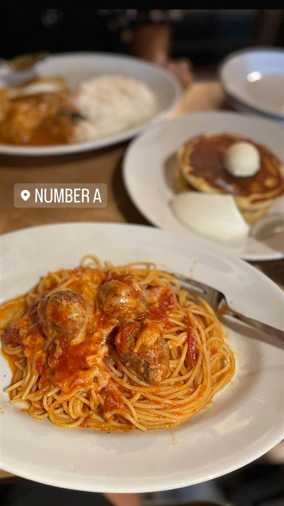

ナンバー・エー（NUMBER A）
青いドアの奥、内装から皿まで自社制作のパンケーキ
NUMBER A
NUMBER Aは2009年に表参道・青山エリアにオープンしたカフェダイナー。クリエイター集団「THE ROUND TABLE INC.」が空間デザインからメニュー開発まで一貫して手がけ、青いドアが目印。パンケーキなどが人気メニュー。
TRIVIA
豆知識
- 青いドアが目印で「青いカフェ」と呼ばれる
- 内装から食器・メニューまですべて自社クリエイターが手がけている
REVIEWS
世間の評判
3.50食べログ
パンケーキとレトロな空間
- 外はさくさく中はしっとりのパンケーキが人気で好評という声が多い
- 懐かしさとおしゃれさが同居する店内の雰囲気を評価する声がある
- ピーク時は満席になるほど混雑することがあるという声も見られる
エキテン 口コミ7件
| 創業 | 2009年オープン |
|---|---|
| 系譜 | クリエイター集団「THE ROUND TABLE INC.」が手がける青山・表参道のカフェダイナー |
| 看板 | パンケーキ |
| こだわり | 壁や天井のペイントから家具、コースター、メニュー開発まですべてTHE ROUND TABLEのクリエイターが手がける |
| どこから | 都心 |
| 予算 | 昼 ¥1,000～¥1,999 夜 ¥1,000～¥1,999 |
| 場所 | 表参道 東京都渋谷区（表参道・青山エリア） |
| メモ | 青山通りから路地に入った、青いドアが目印のカフェダイナー |
食べたもの：ミートボールパスタ
NEARBY
近い店・同じ系統の店
-
 タイ 表参道
表参道バンブー
1977年創業、日本初のサンドイッチ専門店として始まった洋館
夜 ¥5,000～¥5,999
タイ 表参道
表参道バンブー
1977年創業、日本初のサンドイッチ専門店として始まった洋館
夜 ¥5,000～¥5,999
-
 ブランチ 代官山
IVY PLACE
本来は白い箱形の予定だった、別荘風の一軒家でパンケーキ
昼 ¥4,000～¥4,999 夜 ¥6,000～¥7,999
ブランチ 代官山
IVY PLACE
本来は白い箱形の予定だった、別荘風の一軒家でパンケーキ
昼 ¥4,000～¥4,999 夜 ¥6,000～¥7,999
-
 カフェ 表参道
カフェラントマン 青山店（CAFE LANDTMANN）
ウィーン本店と同じレシピで作る本格ザッハトルテ
昼 ¥1,000～¥1,999 夜 ¥3,000～¥3,999
カフェ 表参道
カフェラントマン 青山店（CAFE LANDTMANN）
ウィーン本店と同じレシピで作る本格ザッハトルテ
昼 ¥1,000～¥1,999 夜 ¥3,000～¥3,999
-
 ドリンク 表参道
CHAVATY（チャバティ）
スリランカの茶園で選んだウバ茶のティーソフトクリーム
昼 ～¥999 夜 ～¥999
ドリンク 表参道
CHAVATY（チャバティ）
スリランカの茶園で選んだウバ茶のティーソフトクリーム
昼 ～¥999 夜 ～¥999
-
 カフェ 表参道駅
i2 cafe (アイツーカフェ)
フルーツサンド店の姉妹店が出す、オーブン焼きのダッチベイビー
昼 ¥2,000～¥2,999 夜 ¥2,000～¥2,999
カフェ 表参道駅
i2 cafe (アイツーカフェ)
フルーツサンド店の姉妹店が出す、オーブン焼きのダッチベイビー
昼 ¥2,000～¥2,999 夜 ¥2,000～¥2,999
-
 コーヒー 表参道
lohasbeans coffee（旧店名 Lounge1908 cafe）
コロンビア産スペシャルティコーヒー専門商社のカフェ、数量限定ティラミス
昼 ¥2,000～¥2,999 夜 ¥2,000～¥2,999
コーヒー 表参道
lohasbeans coffee（旧店名 Lounge1908 cafe）
コロンビア産スペシャルティコーヒー専門商社のカフェ、数量限定ティラミス
昼 ¥2,000～¥2,999 夜 ¥2,000～¥2,999